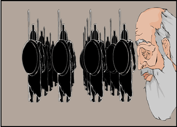

|

Dieneces looked at his grandfather, who had fallen silent. His grandfather appeared to organise his thoughts before continuing. "Sparta had suppressed the Helots, but we could not afford to forget that they forever threatened our way of life. We had always to be ready to fight; after all, there have always been many more Helots than Spartans. Our boys were educated in a way that emphasised their physical fitness, courage and obedience. Our girls' upbringing ensured that they were healthy and strong and so would have strong babies. There was no longer a place in our lives for luxury objects, nor for the craftsmen who made them". | |
| ...previous | next... |